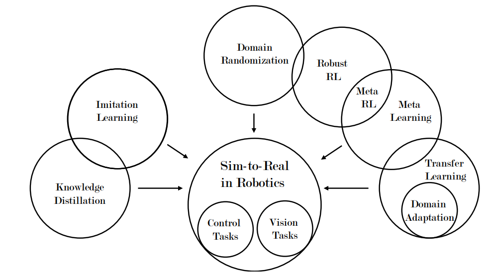
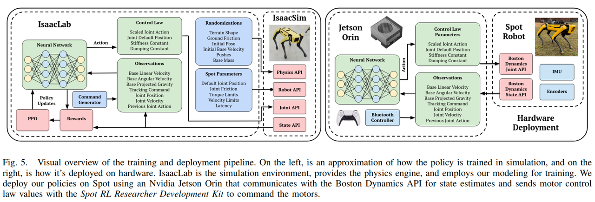
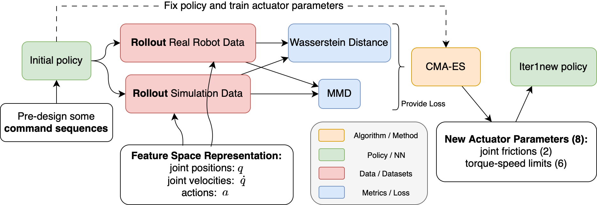
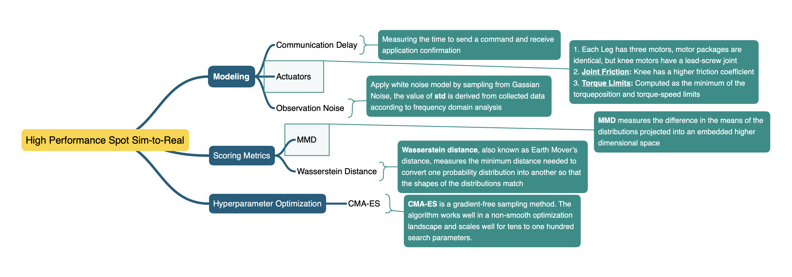
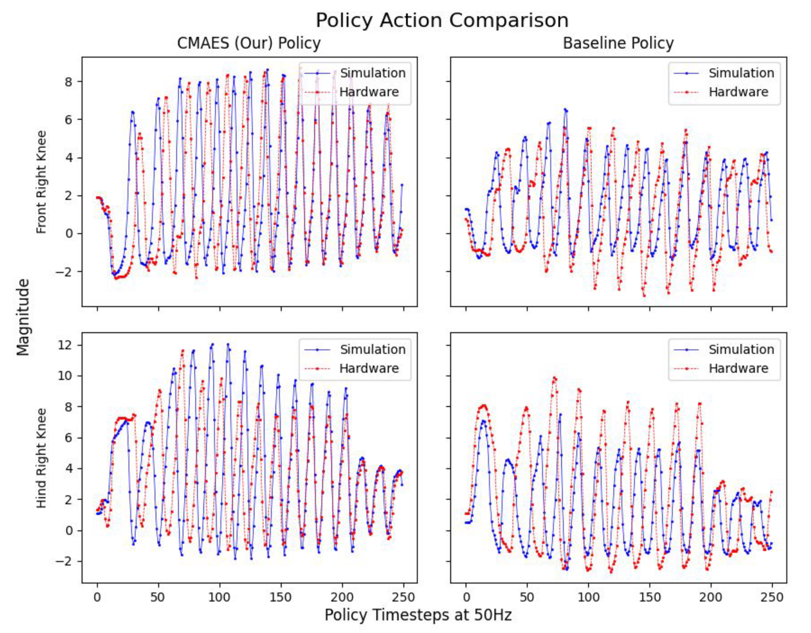
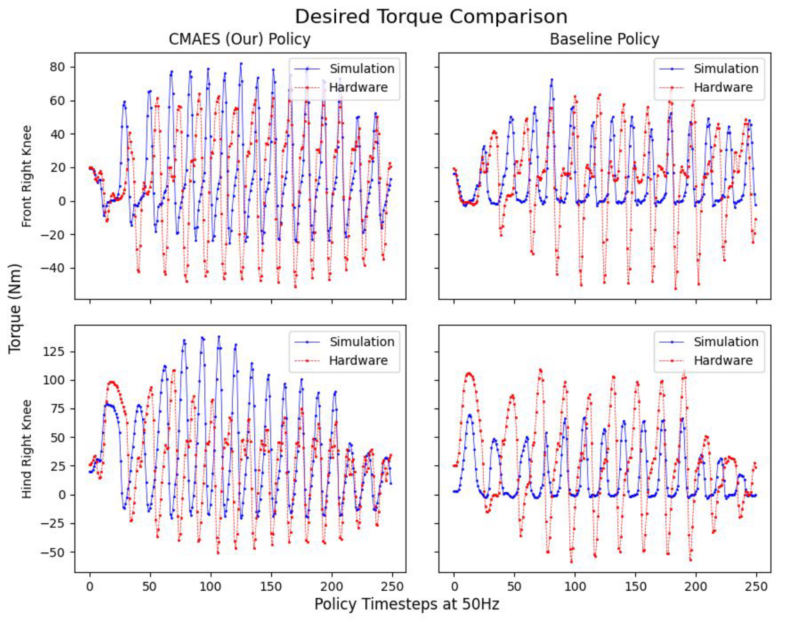
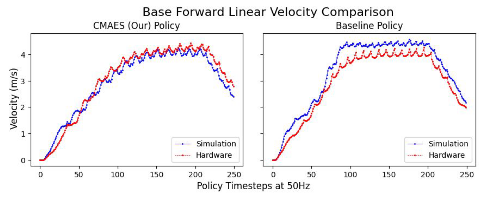

[Paper Reading] High performance RL Sim-to-Real on Spot
基础信息
论文题目： High-Performance Reinforcement Learning on Spot: Optimizing Simulation Parameters with Distributional Measures
作者： A.J. Miller, Fangzhou Yu, Michael Brauckmann, and Farbod Farshidian
工作单位： RAI Institute, Cambridge
发表时间： ICRA 2025
论文链接： https://rai-inst.com/resources/papers/high-performance-reinforcement-learning-on-spot/
研究问题
- 这篇论文研究了面向强化学习的Sim-to-Real迁移学习模块，实验基于Boston Dynamics的Spot机器人平台。研究重点集中于执行器参数建模，采用数据驱动的领域自适应方法优化电机参数。需要指出的是，本文方法主要解决由执行器特性引起的仿真-现实差异，而对于环境因素或刚体模型不准确等其他因素导致的Sim-to-Real Gap则未涉及。这篇工作主要探讨以下两个核心问题：
- 如何量化仿真环境与真实环境中的策略分布差异（scoring metrics）
- 如何使策略适应从真实机器人获取的数据分布（algorithm）
- 机器人Sim-to-Real问题及其研究进展：
- Sim-to-Real问题是随着基于学习的控制方法在机器人领域兴起而产生的重要研究课题。在IsaacSim或MuJoCo等仿真环境中，策略训练完全依赖于仿真器的刚体动力学模型。然而，这些仿真器通常会对物理计算进行必要的简化处理。此外，真实机器人的质量、惯量、摩擦系数等参数与仿真环境难以完全匹配，这些因素共同导致了Sim-to-Real Gap。
- 数学上，Sim-to-Real Gap可以看作是策略在仿真与真实环境下的动力学表现不同，即我们在强化学习中所说的State Transition 的差异。目前解决Sim-to-Real Gap的方法主要有以下几种：
- 知识蒸馏 （RMA, Teacher-Student）
- 域随机化（Domain Randomiazation）
- 域自适应（Domain Adaptation）
- 基于模型的强化学习（Model-based RL）
- 元学习（Meta Learning）

Sim2Real Methods1
技术方法

Spot Train and Deployment Pipeline

Framework of this paper

Method of this paper
- 整个工作包含如下几个部分，整合为一个完整的Sim-to-Real框架
(1) 首先使用默认参数训练一个基础policy，从真机和仿真中的spot机器人上收集数据，包括策略的观测数据，以及Spot提供的其他接口数据（虽然有力反馈，但没使用）
(2) 首先对Sim-To-Real问题进行建模，定义了三个Gap的具体形式，分别是通信延迟，策略观测噪声和执行器参数，然后通过真机获取的相关数据前两种Gap直接建模得到相关超参数，然后电机模型相关参数则用优化方法进行确认；
(3) 然后使用关节的位置和速度作为特征，使用Wasserstein Distance和MMD来设计scoring function，在仿真中固定策略模型，通过CMA-ES算法优化电机模型参数
(4) 使用优化后的电机模型参数重新训练policy，并在真机上进行验证
实验结果
- 实验部分通过实现了一个flight phase gait的速度跟踪来作为衡量Sim-To-Real效果的指标，下面是plot出来的结果，可以看到使用优化后的参数，策略的动作会没有之前保守，并且Simulation和Hardware之间的差距减小了，还是有明显效果的。

Policy Action Comparison

Policy Troque Comparison

Base Forward Linear Velocity Comparison
论文总结
- 首先，这个工作研究的问题是非常有价值的，RL作为一个强大的工具，但是极度依赖于仿真的结果，因此有偏的模型会严重影响RL在真机上的效果
- 个人感觉论文提出的方法还是非常靠谱的，只不过稍微有点复杂了，并且似乎也无法保证每台机器用一组参数就能够保证Sim-to-Real Gap的减小，可能对同一机器人的每台机器还需要重新训练优化参数
- 可能更好的方法还是Meta Learning或Model-based RL这一类方法，使用通用模型或通用算法来适应不同的环境，而不是通过单独一个policy的结果来优化仿真参数
引用参考
Related Articles

Comments
![[Paper Reading] High performance RL Sim-to-Real on Spot](/Blogs/./img/Robotics/20250516/2025-05-16-02.png)